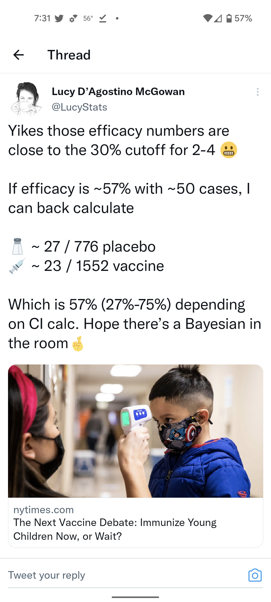
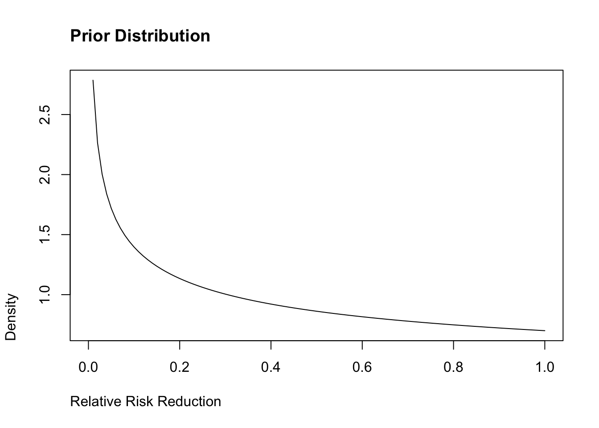
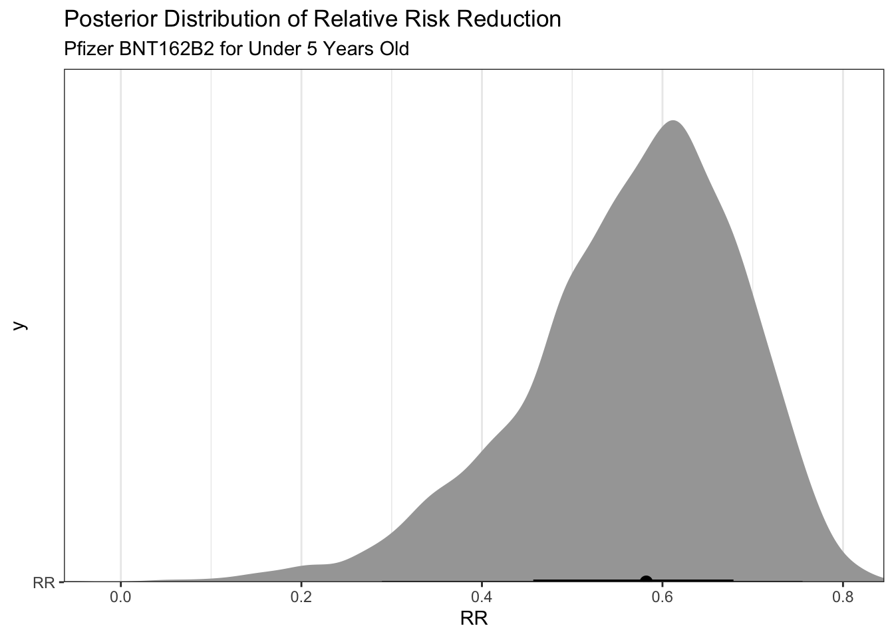

A Bayesian reanalysis of estimates for the Pfizer Vaccine candidate for children under five years old. Frequentist statistics say it fails while Bayes would indicate that it should be approved.
As the parent to a child under the age of five, I have been anxiously awaiting news regarding the availability of a vaccine against COVID-19 for some time. The news recently was that the FDA was encouraging Pfizer/BioNTech to submit the data for their clinical trials for their vaccine candidate for the 6 month to five year old group. Early reporting was that the vaccine wasn’t meeting it’s endpoints with two doses (which were reduced in concentration from the older groups for fear of vaccine induced myocarditis) and would need to pursue a third dose.
It would appear that once the independent review board looked at the initial data they balked and are now holding off until the results of the April submission.
Only a Bayesian Can Save Us Now
This post really was stirred by Lucy D’Agostino McGowan’s twitter post as shown below. Bayesian analysis allows us to include prior information. It would seem that a clinical trial in the midst of:
Massive vaccinations across the world
Continuous evaluation of vaccine efficiency (a la the United Kingdom amongst others)
New variants which are antigenically different that the lineages on which the vaccines were based
…should take advantage of Bayesian data analysis.

Reviving a Prior Analysis
I am going to take code from a prior blogpost where Bayesian analysis was used to look at Paxlovid, another Pfizer product.
First we visualize our data using the approximations that Dr McGowan gave us:
library(cmdstanr)
This is cmdstanr version 0.4.0
- Online documentation and vignettes at mc-stan.org/cmdstanr
- CmdStan path set to: /Users/michael/.cmdstanr/cmdstan-2.28.2
- Use set_cmdstan_path() to change the path
A newer version of CmdStan is available. See ?install_cmdstan() to install it.
To disable this check set option or environment variable CMDSTANR_NO_VER_CHECK=TRUE.
library(tidybayes)library(posterior)
This is posterior version 1.2.1
Attaching package: 'posterior'
The following objects are masked from 'package:stats':
mad, sd, var
library(ggplot2)library(dplyr)
Attaching package: 'dplyr'
The following objects are masked from 'package:stats':
filter, lag
The following objects are masked from 'package:base':
intersect, setdiff, setequal, union
Yikes, so based on these frequentist statistics, the Pfizer vaccine fails.
Enter Bayes
Pfizer initially used Bayesian data analysis on their original submission for the 18 and older vaccine. I think it would be worthwhile to re-examine these data under similar priors and see what our results indicate. First we can recycle our previous trial code which considers our prior on the relative risk as well as calculates the net effect.
writeLines(readLines("trial.stan"))
//based on https://www.robertkubinec.com/post/vaccinepval/
// Which is based on https://rpubs.com/ericnovik/692460
data {
int<lower=1> r_c; // num events, control
int<lower=1> r_t; // num events, treatment
int<lower=1> n_c; // num cases, control
int<lower=1> n_t; // num cases, treatment
real a[2]; // prior values for treatment effect
}
parameters {
real<lower=0, upper=1> p_c; // binomial p for control
real<lower=0, upper=1> p_t; // binomial p for treatment
}
transformed parameters {
real RR = 1 - p_t / p_c; // Relative effectiveness
}
model {
(RR - 1)/(RR - 2) ~ beta(a[1], a[2]); // prior for treatment effect
r_c ~ binomial(n_c, p_c); // likelihood for control
r_t ~ binomial(n_t, p_t); // likelihood for treatment
}
generated quantities {
real effect = p_t - p_c; // treatment effect
real log_odds = log(p_t / (1 - p_t)) - log(p_c / (1 - p_c));
}
Exploring Priors
Pfizer initially used some pretty weak, pessimistic priors. The bulk of the distribution is < 0.2, which would indicate that the vaccine is not effective. We can start with these and see what happens.
curve(dbeta(x, shape1 = .700102, shape2 =1), from =0, to =1, ylab ="Density", xlab ="Relative Risk Reduction",main ="Prior Distribution", adj =0)

It is also interesting to look numerically where the bulk of the distribution lies (which in this case is very wide):
qbeta(p =c(.05,.95), .700102, 1)
[1] 0.01385659 0.92935409
Let’s fit the model:
mod <-cmdstan_model("trial.stan")dat <-list(n=sum(dat_trials$arm_n),r_c=dat_trials[2,]$cases,r_t=dat_trials[1,]$cases,n_c=dat_trials[2,]$arm_n,n_t=dat_trials[1,]$arm_n,a=c(.700102,1))fit <- mod$sample(dat, refresh =0)
Running MCMC with 4 parallel chains...
Chain 1 Informational Message: The current Metropolis proposal is about to be rejected because of the following issue:
Chain 1 Exception: beta_lpdf: Random variable is nan, but must be in the interval [0, 1] (in '/var/folders/0x/6bnjy4n15kz8nbfbbwbyk3pr0000gn/T/Rtmp0kXsrK/model-8c3e7edab924.stan', line 19, column 2 to column 39)
Chain 1 If this warning occurs sporadically, such as for highly constrained variable types like covariance matrices, then the sampler is fine,
Chain 1 but if this warning occurs often then your model may be either severely ill-conditioned or misspecified.
Chain 1
Chain 3 Informational Message: The current Metropolis proposal is about to be rejected because of the following issue:
Chain 3 Exception: beta_lpdf: Random variable is nan, but must be in the interval [0, 1] (in '/var/folders/0x/6bnjy4n15kz8nbfbbwbyk3pr0000gn/T/Rtmp0kXsrK/model-8c3e7edab924.stan', line 19, column 2 to column 39)
Chain 3 If this warning occurs sporadically, such as for highly constrained variable types like covariance matrices, then the sampler is fine,
Chain 3 but if this warning occurs often then your model may be either severely ill-conditioned or misspecified.
Chain 3
Chain 4 Informational Message: The current Metropolis proposal is about to be rejected because of the following issue:
Chain 4 Exception: beta_lpdf: Random variable is nan, but must be in the interval [0, 1] (in '/var/folders/0x/6bnjy4n15kz8nbfbbwbyk3pr0000gn/T/Rtmp0kXsrK/model-8c3e7edab924.stan', line 19, column 2 to column 39)
Chain 4 If this warning occurs sporadically, such as for highly constrained variable types like covariance matrices, then the sampler is fine,
Chain 4 but if this warning occurs often then your model may be either severely ill-conditioned or misspecified.
Chain 4
Chain 4 Informational Message: The current Metropolis proposal is about to be rejected because of the following issue:
Chain 4 Exception: beta_lpdf: Random variable is nan, but must be in the interval [0, 1] (in '/var/folders/0x/6bnjy4n15kz8nbfbbwbyk3pr0000gn/T/Rtmp0kXsrK/model-8c3e7edab924.stan', line 19, column 2 to column 39)
Chain 4 If this warning occurs sporadically, such as for highly constrained variable types like covariance matrices, then the sampler is fine,
Chain 4 but if this warning occurs often then your model may be either severely ill-conditioned or misspecified.
Chain 4
Chain 1 finished in 0.0 seconds.
Chain 2 finished in 0.1 seconds.
Chain 3 finished in 0.0 seconds.
Chain 4 finished in 0.0 seconds.
All 4 chains finished successfully.
Mean chain execution time: 0.0 seconds.
Total execution time: 0.5 seconds.
Warning in seq.default(from = 1, len = along - 1): partial argument match of
'len' to 'length.out'
Warning in seq.default(to = N - 1, len = N - along): partial argument match of
'len' to 'length.out'
Warning in seq.default(len = N): partial argument match of 'len' to 'length.out'
Warning in seq.default(along = arg.names): partial argument match of 'along' to
'along.with'
Warning in seq.default(len = length(arg.list)): partial argument match of 'len'
to 'length.out'
Warning in seq.default(along = perm): partial argument match of 'along' to
'along.with'
Warning in seq.default(along = perm): partial argument match of 'along' to
'along.with'
Warning in seq.default(along = perm): partial argument match of 'along' to
'along.with'
Warning in seq.default(along = perm): partial argument match of 'along' to
'along.with'
Warning in seq.default(along = perm): partial argument match of 'along' to
'along.with'
Warning in seq.default(along = perm): partial argument match of 'along' to
'along.with'
Warning in seq.default(along = perm): partial argument match of 'along' to
'along.with'
Warning in seq.default(along = perm): partial argument match of 'along' to
'along.with'
Warning in seq.default(len = ncol(arg.dim)): partial argument match of 'len' to
'length.out'
Warning in seq.default(len = N): partial argument match of 'len' to 'length.out'
Warning in seq.default(along = arg.names): partial argument match of 'along' to
'along.with'
Warning in seq.default(along = arg.names): partial argument match of 'along' to
'along.with'
Warning in seq.default(len = length(arg.names)): partial argument match of 'len'
to 'length.out'
Warning in seq.default(along = perm): partial argument match of 'along' to
'along.with'
I’m going to write a quick helper function for summarising results from the fitted model.
Using these initial priors we get the following results:
pull_cis(fit)
Warning in seq.default(from = 1, len = along - 1): partial argument match of
'len' to 'length.out'
Warning in seq.default(to = N - 1, len = N - along): partial argument match of
'len' to 'length.out'
Warning in seq.default(len = N): partial argument match of 'len' to 'length.out'
Warning in seq.default(along = arg.names): partial argument match of 'along' to
'along.with'
Warning in seq.default(len = length(arg.list)): partial argument match of 'len'
to 'length.out'
Warning in seq.default(along = perm): partial argument match of 'along' to
'along.with'
Warning in seq.default(along = perm): partial argument match of 'along' to
'along.with'
Warning in seq.default(along = perm): partial argument match of 'along' to
'along.with'
Warning in seq.default(along = perm): partial argument match of 'along' to
'along.with'
Warning in seq.default(along = perm): partial argument match of 'along' to
'along.with'
Warning in seq.default(along = perm): partial argument match of 'along' to
'along.with'
Warning in seq.default(along = perm): partial argument match of 'along' to
'along.with'
Warning in seq.default(along = perm): partial argument match of 'along' to
'along.with'
Warning in seq.default(len = ncol(arg.dim)): partial argument match of 'len' to
'length.out'
Warning in seq.default(len = N): partial argument match of 'len' to 'length.out'
Warning in seq.default(along = arg.names): partial argument match of 'along' to
'along.with'
Warning in seq.default(along = arg.names): partial argument match of 'along' to
'along.with'
Warning in seq.default(len = length(arg.names)): partial argument match of 'len'
to 'length.out'
Warning in seq.default(along = perm): partial argument match of 'along' to
'along.with'
variable
mean
median
q025
q975
RR
0.57
0.58
0.29
0.76
These don’t look too bad! The 95% credible intervals are similar, though a nudge higher, than the frequentist confidence intervals
Thanks to @statstaci5 who pointed out initially I had used a 90% credible interval. Moral of the story is don’t work on statistics after 10pm and certainly don’t trust the defaults.
Let’s see if we hit the lower endpoint of 30% risk reductions (and really what fraction of the draws are greater than 30%).
draws <- fit$draws(variables ="RR") %>%as_draws_df()mean(as.numeric(draws$RR>.3))
[1] 0.97075
So that’s a bit interesting in that there is a 97.1% posterior probability that the vaccine efficiency is greater than 30% (which is the lower limit of approval). Additionally, there is a 74% posterior probability given these data that the vaccine efficiency (relative risk reduction) is greater than 50%
We can graph these results to display the same information visually.
draws %>%#median_qi(VE, .width = c(.5, .89, .995)) %>%ggplot(aes(y ="RR", x = RR)) +stat_halfeye()+scale_color_brewer()+coord_cartesian(expand =FALSE)+labs(title ="Posterior Distribution of Relative Risk Reduction",subtitle ="Pfizer BNT162B2 for Under 5 Years Old" )

So What?
One key point is that these raw data are inferred from the reporting that there were around 50 cases so these are crude approximations. Regardless this analysis shows that we shouldn’t throw the proverbial baby out with the bathwater. This looks like a vaccine that would meet the endpoints and is showing expected effectiveness given the changing terrain of the pandemic. Of course there are other competing concerns out there–like if a booster is needed would this EUA interrupt that process? Would an EUA cause people to doubt the process (honestly the FDA messed this one up going back and forth with Pfizer on this)? Are there data that have yet to be made public (e.g., faster nAbs waning)? Regardless, this analysis shows that being a Bayesian in these contexts is likely warranted.
Note: Edited 2022-02-12 for typos (per paragraph 1)…
Note2: Moved Bayesian credible intervals to 95% to be consistent with frequentist 95% CIs- Thanks @statstaci5.
Note3: Correct hospitalizations to cases. I have hospitalizations on the brain most of the time. Thanks @LucyStats!
I really need to open up this github repo for this reason but alas….
![]()